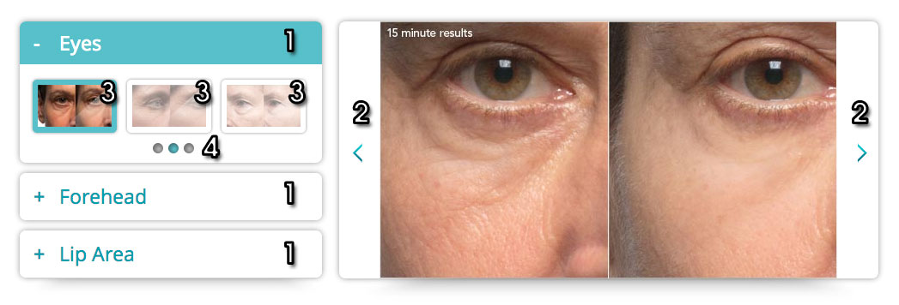
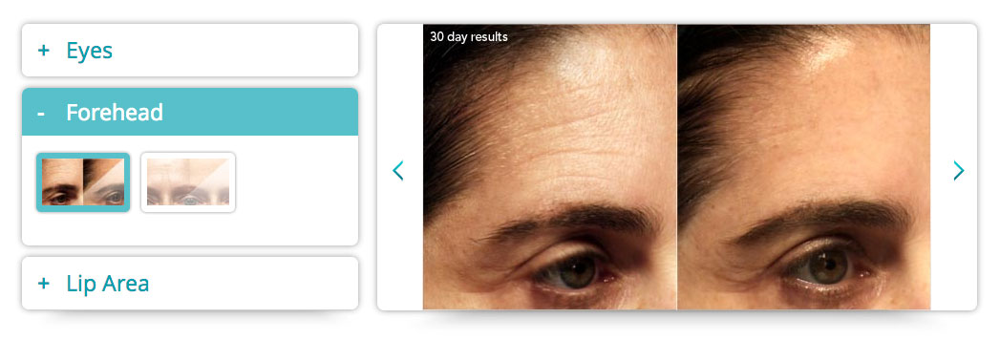
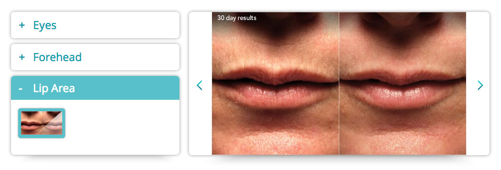

Slideshow Test
Instructions:
1. Build this slideshow with the thumbnails and images in the "assets" folder.
2. Use W3C valid markup.
3. Plae a total of 12 images in 3 sections. 9 images in the Eyes, 2 in Forehead, and 1 in Lip area.
4. The Eyes section has 3 "pages" of 3 thumbnails each, indicated by the dots at the bottom of the section.
Action areas:
- When any of the headers are pressed, that section is opened and the other sections will collapse.
- The back and next arrow buttons will cycle through all the images (total of 12).
- When at the first image of the Eyes section, pressing [<] will bring you to the last image of the Lips section, and automatically close the Eyes section and open the Lips section.
- When at the last image of a section and the [>] button is pressed, the first image of the next section is chosen and that new section opens and the old one closes.
- If [>] is pressed while on the 3rd or 6th Eyes thumb, the next "page" of thumbs in the Eyes section will become visible with the next image highlighted. Same with [<] for the 4th and 7th thumbmails going to the previous page.
- When a thumbmail is selected, it will be highlighted and the respective image will be shown on the right hand side. The thumbnail will also be highlighted upon hover.
- The dots are indicators of which page you're on among the 3 pages of thumbnails. When pressed, it'll take you to the associated page. When

Here is how it would look with the other sections opened:


Optional
- Enhance the experience with CSS3/HTML5
- Provide configuration Options for behaviors